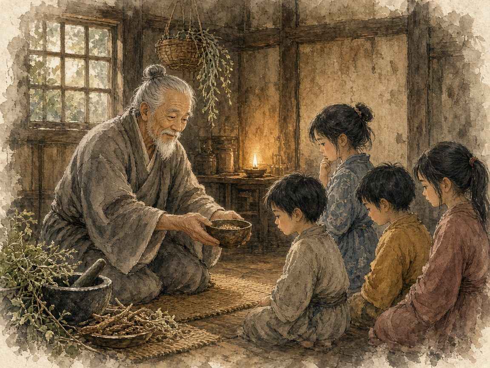

第3回良医病子（ろういびょうし）の譬え
配信日
出典『妙法蓮華経』如来寿量品第十六（良医病子の譬え）／関連：毒矢のたとえ（『中阿含経』箭喩経、パーリ経典『マッジマ・ニカーヤ』第63経「マールンキヤ小経」）

毒を飲んで苦しむ子どもたちのために、名医である父が良い薬を調えます。ところが本心を失った子どもたちは、なかなか薬を飲もうとしません。そこで父は方便を用いて、子どもたちが自分から薬を飲むように導きました。御法門では、この良薬こそ妙法、お題目であると拝します。
毒矢に射られた人が「誰が射たのか、弓は何でできているのか」が分かるまで矢を抜かせないと言えば命を落とす、という毒矢のたとえと同じく、薬は理屈を知るだけでは効かず、飲んでこそ効くということを教えています。